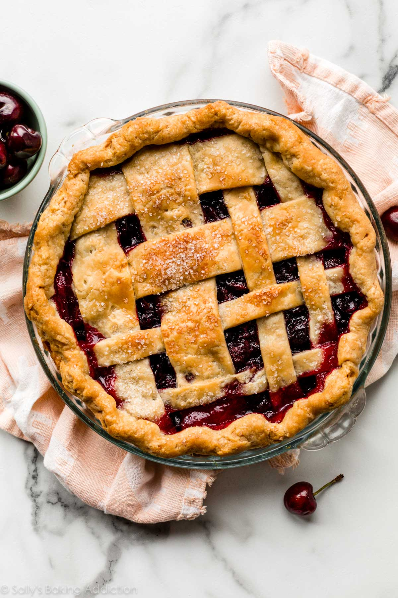

Cherry Pie

Description:
Cherry pie is one of the most essential dishes in an American Thanksgiving experience.
It is generally created using cherries. The baker takes the cherries and converts them
into a pie-like state. I don't actually know anything about baking or pies, this is just
another episode of me writing paragraphs to add more structure to this website. Actually
listening to a comedy video on YouTube at the moment. It's also 4:05 in the morning and I've
been a little bit sick all day. It's not COVID or anything, just a passing thing that I'll
probably get over once I go to sleep. Not that I'll be going to sleep anytime soon though.
That's fine, because tomorrow is Sunday and I get to rest.
Ingredients:
- 2 1/4 cups all-purpose flour
- 2 tablespoons sugar
- 1/2 teaspoon salt
- 8 tablespoons butter, cut into 1/2-inch cubes and frozen
- 4 tablespoons vegetable shortening, in small pieces, frozen
- 8 tablespoons very cold cream cheese, in small pieces
- 1/3 cup ice-cold water
- 3 (16 ounce) cans water-packed red, tart, pitted cherries, drained and juice reserved
- 1 cup sugar
- 1/4 cup potato starch
- 1/2 teaspoon almond extract
- 1 tablespoon butter, in small pieces
- 1 egg white, lightly beaten
- 1 1/2 tablespoons sugar
Steps:
- Mix flour, 2 Tbs. sugar and salt in a food processor. Add 8 Tbs. frozen butter and pulse 4 times, 1 long second each time. Drop shortening and cream cheese into flour mixture; pulse another 4 or 5 times, 1 long second each, until fats are the size of peas and fine gravel.
- Dump mixture into a medium bowl; rub through clean fingertips to blend. Stir in water with a rubber spatula until dough clumps form. Press dough with your palm to form a ball, then divide in half. Wrap each half in plastic wrap, pressing to form thick disks. Refrigerate at least 1 hour.
- Adjust oven rack to lowest position and place a pizza stone or four 9-inch quarry tiles (from a hardware store) on rack to form an 18-inch square. Preheat to 400 degrees.
- In a large saucepan, cook 1 cup cherry juice, 1 cup sugar, potato starch and a pinch of salt over medium-low heat; stir with a rubber spatula until a very thick paste forms. Scrape paste into cherries in a bowl. Add almond extract; stir to combine.
- Set a dough disk on a floured work surface. Roll into a 14-inch circle. Fold in half and quickly lift into a 9-inch Pyrex pie plate (not deep-dish). Unfold. Fit dough into pie plate so it is not stretched in any way. Refrigerate.
- Roll remaining dough disk into a 12-inch circle. Remove pie shell from refrigerator, add fruit filling, and dot with 1 Tb. butter. Fold dough circle in half; quickly lift onto filling and unfold. Trim all around to 1/2-inch beyond lip of pie plate. Roll overhanging dough under with fingertips; flute.
- Set an 18-inch square of heavy-duty foil on tiles or pizza stone. Set pie on foil and bake until crust just starts to color, about 20 minutes. Remove from oven, brush with egg white, and sprinkle with 1 1/2 Tbs. sugar. Bake until golden brown, about 20 minutes longer. Bring foil up around pie to loosely cover edges. Bake until filling bubbles, 15 to 20 minutes longer. Cool on a wire rack.